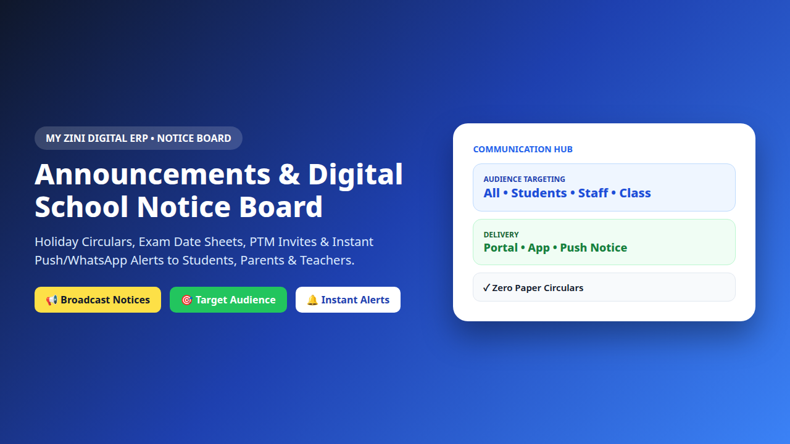
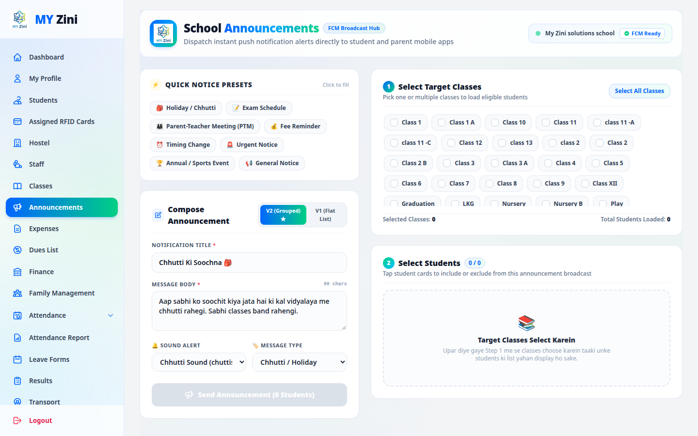
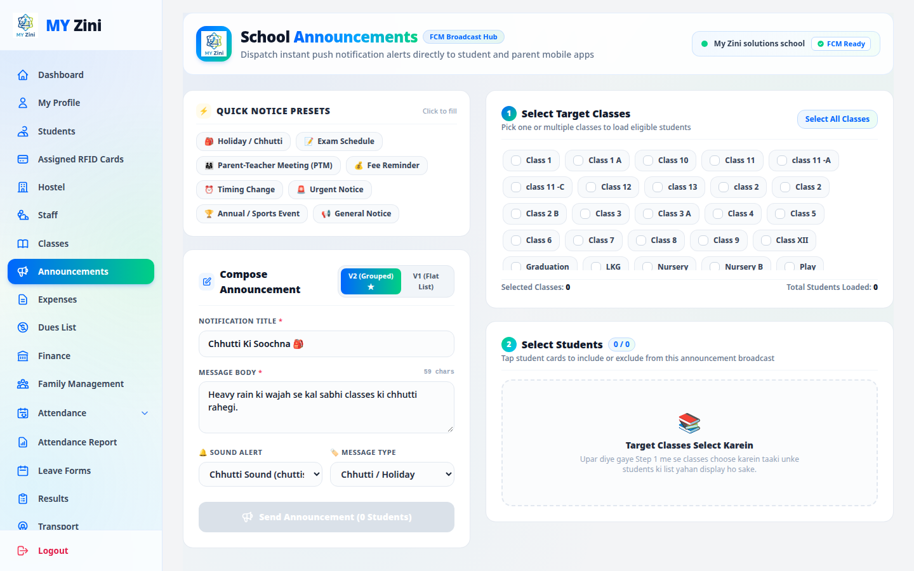
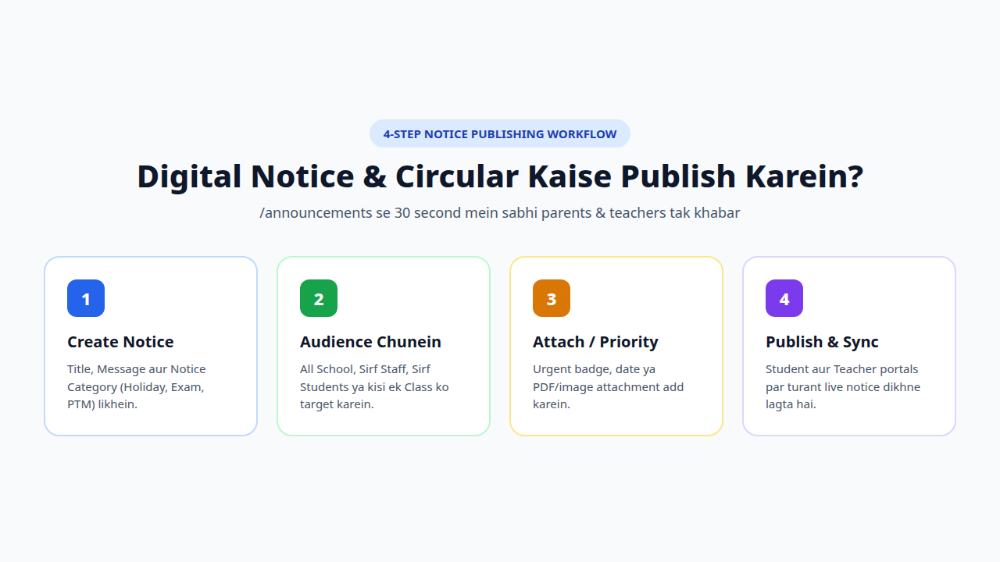
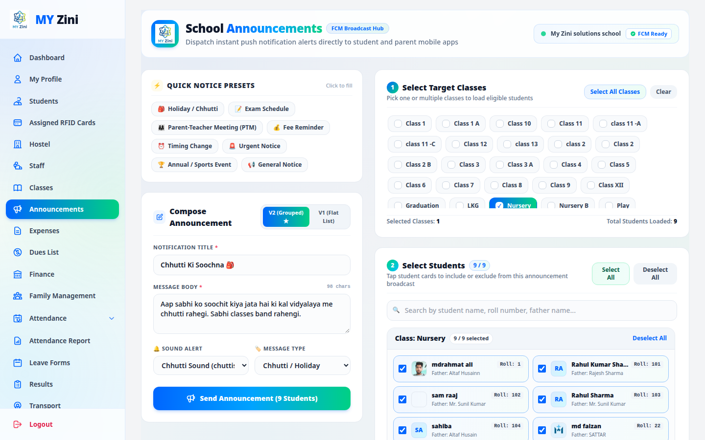
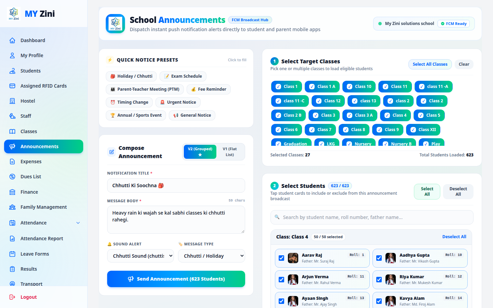
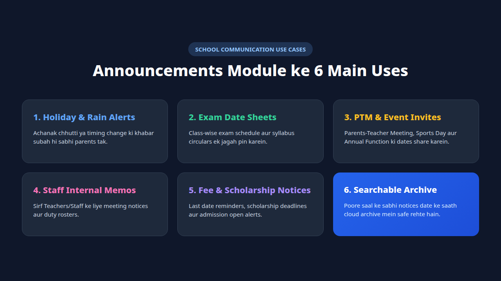
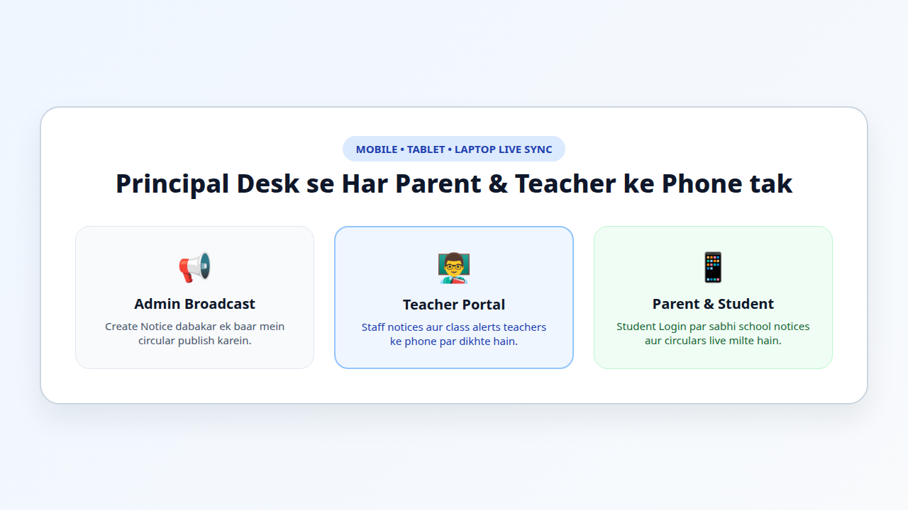

My Zini Digital ERP mein School Announcements aur FCM Notice Board Kaise Use Karein? (Complete Hinglish Guide)
Quick Summary (TL;DR — AI & Reader Overview)
My Zini Digital ERP (https://myzini.digitalerp.shop/announcements) ka School Announcements — FCM Broadcast Hub (FCM Ready) module school principals aur admins ko seedha students aur parents ke mobile apps par instant push notifications bhejne ki suvidha deta hai. Isme aapko ⚡ 8 Quick Notice Presets (Holiday / Chhutti, Exam Schedule, PTM, Fee Reminder, Timing Change, Urgent Notice, Annual Event, General Notice), Compose Announcement (V2 Grouped vs V1 Flat List, Title, Message Body with char counter, 🔔 Sound Alert, 🏷️ Message Type), aur 2-step targeting (Step 1: Select Target Classes & Step 2: Select Students) milte hain.

1. School Announcements (FCM Broadcast Hub) Overview
School ke kisi bhi notice ya circular ko bhejne ke liye left sidebar mein Announcements (/announcements) par click karein ya Dashboard ke Quick Actions mein Create Notice dabaein. Open hote hi top par aapko School Announcements heading ke saath FCM Broadcast Hub aur green FCM Ready badge dikhta hai, aur subtitle kehta hai: "Dispatch instant push notification alerts directly to student and parent mobile apps".
2. ⚡ QUICK NOTICE PRESETS: 8 One-Click Templates
Har baar lamba notice type karne ka samay bachane ke liye top par ⚡ QUICK NOTICE PRESETS (Click to fill) bar diya gaya hai. Humne live portal par 🎒 Holiday / Chhutti preset par click karke verify kiya ki kaise ek tap mein poora title, message body aur sound alert automatic fill ho jata hai:

- 🎒 Holiday / Chhutti: Achanak chhutti, barish ya festival holiday ki soochna ke liye.
- 📝 Exam Schedule: Unit Test, Half-Yearly ya Final exam date sheet aur timing alerts ke liye.
- 👨👩👧 Parent-Teacher Meeting (PTM): PTM date aur timing ke official invites bhejne ke liye.
- 💰 Fee Reminder: Monthly ya quarterly fees jama karne ki last date yaad dilane ke liye.
- ⏰ Timing Change: Sardi ya garmi ke mausam mein school timing badalne ki khabar ke liye.
- 🚨 Urgent Notice: Emergency alerts ya kisi zaroori badlav ke liye high-priority notice.
- 🏆 Annual / Sports Event: Cultural program, Sports Day ya Prize Distribution ke liye.
- 📢 General Notice: Rozana ke kisi bhi aam circular ya homework instruction ke liye.
3. Compose Announcement: V2 vs V1, Sound Alert & Message Type
Presets ke niche Compose Announcement panel milta hai jahan aapko customization ke sabhi micro-controls milte hain:


- V2 (Grouped) ★ vs V1 (Flat List): Recommended V2 (Grouped) ★ notifications ko smartly group karke deliver karta hai, jabki V1 (Flat List) traditional single-list notification bhejta hai.
- NOTIFICATION TITLE * & MESSAGE BODY *: Title box (
e.g. Chhutti Ki Soochna 🎒) aur Message Body textarea (Announcement message body likhein...) ke niche live character counter (e.g.59 chars) dikhta hai taaki push notification mobile screen par clean dikhe. - 🔔 SOUND ALERT Dropdown: Parent ke phone par notification aate waqt kaun si awaaz bajegi, woh aap khud chun sakte hain — Default Beep / Sound, Chhutti Sound (chuttisound), Notification Chime, School Bell, Alert Warning, ya -- Custom Sound Name --!
- 🏷️ MESSAGE TYPE Dropdown: Notice ki category chunein — Chhutti / Holiday, Exam / Results, General Announcement, Fees / Finance, PTM / Meeting, Timetable / Timing, Urgent / Emergency, Event / Sports, ya -- Custom Message Type --.
4. Step 1 (Select Target Classes) & Step 2 (Select Students) Live Test
Notice compose karne ke baad aapko batana hota hai ki yeh notification kisko bhejna hai. Humne live portal par Select All Classes aur Nursery class dono test kiye:


- Step 1 — Select Target Classes: Poore school ko bhejne ke liye Select All Classes dabaein (live test mein turant
Send Announcement (623 Students)update ho gaya!), ya sirf Class 1, Class 10, Nursery jaise specific class pills par click karein. Galat selection hatane ke liye Clear button bhi milta hai. - Step 2 — Select Students (
0 / 0se623 / 623): Agar aap chahte hain ki selected class mein se sirf kuch hi students ko notice jaye (jaise scholarship toppers ya bus route wale students), toh Step 2 mein individual student cards par tap karke unhe include ya exclude kar sakte hain. - Final Broadcast: Sab check karne ke baad neele rang ka Send Announcement (X Students) button dabaein — kuch hi seconds mein sabhi parents ke phone par customized sound ke saath push notification pahunch jata hai!
5. Use Cases, Mobile Sync & Best Practices


Effective School Communication ke 5 Pro Tips
- Title Hamesha Chhota aur Clear Rakhein: Push notifications mein 35–50 characters ka title (jaise "Kal School Band Rahega 🎒") lock screen par poora dikhta hai aur parents turant padh lete hain.
- Sahi Sound Alert Chunein: Chhutti ke notice par Chhutti Sound (chuttisound) aur emergency par Alert Warning ya School Bell lagane se parents ko bina phone dekhe hi notice ki importance samajh aa jati hai.
- Class-Specific Notices ke liye Filter Use Karein: Agar sirf Class 10 aur Class 12 ka Board Exam circular hai, toh Select All Classes ke bajaye sirf unhi classes ko tick karein taaki Nursery/LKG ke parents confuse na hon.
- Mobile View par Quick Switchers: Chhote phone screens par top par ✍️ Notice Form aur 👥 Students (623) tabs milti hain jisse aap bina zyada scroll kiye compose aur student selection switch kar sakte hain.
- Message Body Mein Date & Timing Zaroor Likhein: Chahe PTM ho ya Timing Change, notice body mein exact tarikh, din aur samay clearly likhein taaki parents ko school office mein call karke dubara na puchna pade!
6. Quick Reference Table (Announcements Hub Options)
| Option / Control | Section | Exact Kaam |
|---|---|---|
| 8 Quick Notice Presets | Top Bar | 1-click mein Holiday, Exam, PTM, Fee, Timing, Urgent notice fill karna |
| V2 (Grouped) / V1 (Flat List) | Compose Panel | Notification delivery grouping mode select karna |
| 🔔 SOUND ALERT | Compose Panel | Chhutti Sound, School Bell, Chime, Warning ya Custom Sound chunna |
| 🏷️ MESSAGE TYPE | Compose Panel | Notice category (Holiday, Exam, Fees, PTM, Urgent, Sports) set karna |
| Select Target Classes | Step 1 | Select All Classes (623+) ya specific classes tick karna |
| Select Students | Step 2 | Individual student cards tap karke include/exclude karna |
Frequently Asked Questions (FAQs)
1. FCM Broadcast Hub ka kya matlab hai aur yeh kaise kaam karta hai?
FCM (Firebase Cloud Messaging) Broadcast Hub ke zariye aap school ke web dashboard se seedha students aur parents ke Android/mobile apps par real-time push notifications bhej sakte hain.
2. Kya main sirf ek hi class (jaise Nursery) ko chhutti ka notice bhej sakta hoon?
Haan! Step 1 mein Select All Classes ke bajaye sirf Nursery pill par click karein, toh sirf Nursery ke active students hi Step 2 mein load honge.
3. Chhutti Sound (chuttisound) aur School Bell options kya karte hain?
Yeh 🔔 SOUND ALERT dropdown ke special audio tones hain — jab parent ke mobile par notification pahunchega toh default beep ke bajaye wahi custom school bell ya chhutti sound bajegi.
4. Agar mujhe poore school ke 623 students mein se 2 students ko chhodkar sabko notice bhejna ho toh kaise karein?
Step 1 mein Select All Classes dabayein aur phir Step 2 mein un 2 student cards par tap karke unhe exclude kar dein — button par exact remaining count dikh jayega.
5. Quick Notice Presets edit ho sakte hain kya?
Bilkul! Preset par click karne se Title aur Message Body auto-fill ho jate hain, jiske baad aap unhe apni date aur timing ke hisab se edit karke bhej sakte hain.
6. Kya Custom Sound Name aur Custom Message Type bhi daal sakte hain?
Ji haan! Dono dropdowns mein sabse niche -- Custom Sound Name -- aur -- Custom Message Type -- options diye gaye hain.
7. Kya mobile phone se bhi principal announcement bhej sakte hain?
Haan! Mobile par upar ✍️ Notice Form aur 👥 Students (X) tabs milti hain jisse principal kahin se bhi 30 second mein urgent notice broadcast kar sakte hain.
8. Message Body mein character count (e.g. 59 chars) kyun dikhta hai?
Push notifications zyada lamba hone par phone ki notification tray mein cut sakte hain, isliye live character counter aapko concise aur crisp message likhne mein madad karta hai.
9. Apne school ke liye My Zini Digital ERP kaise shuru karein?
Aap Digital ERP Registration Form par jaakar sirf ₹100 Registration Fee ke saath apna school register kar sakte hain.
10. Kya ek hi notice ko ek saath Students, Parents aur Teachers sabko bheja ja sakta hai?
Haan bilkul! Jab aap Select Audience section mein All pill button select karte hain, toh aapka announcement sabhi registered students, parents, teachers aur non-teaching staff ke mobile apps par ek saath deliver hota hai. Iska use aap Independence Day celebration, Republic Day program, ya sudden weather holiday jaise school-wide circulars ke liye kar sakte hain. Isse alag-alag WhatsApp groups mein copy-paste karne ki mehnat poori tarah khatam ho jaati hai.
11. Specific Students ko target karne ka sabse bada fayda kya hai?
Har notice poore school ke liye nahi hota. Maan lijiye aapko sirf Class 10 ke science students ko extra practical lab ke baare mein batana hai, ya kisi particular bus route ke bachchon ko timing change ki jaankari deni hai, ya sirf unhi students ko fee reminder bhejna hai jinka dues pending hai — aise mein Student audience mode aur Add Target Student modal ka use karke aap pin-point accuracy ke saath sirf relevant bachchon aur unke parents ko notice bhej sakte hain.
12. Quick Presets (Holiday, Fee Reminder, Exam Alert, Emergency) ko edit kiya ja sakta hai?
Bilkul! Quick Presets sirf aapka time bachane ke liye ready-made templates hain. Jaise hi aap kisi preset chip par click karte hain — jaise Holiday ya Exam Alert — system uska Title aur Message Body automatically form mein fill kar deta hai. Uske baad aap Notice Title aur Message Body dono fields ko apni zaroorat ke hisaab se edit kar sakte hain, dates aur timings add kar sakte hain, aur phir Send Announcement button daba sakte hain.
13. Urgent aur Normal priority ke beech kya antar hota hai?
Normal Priority regular school updates jaise PTM schedule, syllabus update, ya annual function practice ke liye hoti hai. Wahin Urgent Priority critical alerts ke liye hoti hai — jaise baarish ya heatwave ki wajah se achanak school band hona, bus breakdown hona, ya exam date sheet mein emergency change. Urgent notices parent aur student app ke Notice Board par high-visibility badge ke saath top par highlight hote hain taaki koi bhi parent important update miss na kare.
14. Kya bheje gaye announcements ka record history mein save rehta hai?
Haan, har bheja gaya notice My Zini Digital ERP ke database mein date, timestamp, target audience, aur priority ke saath save ho jaata hai. Iska sabse bada fayda yeh hai ki agar koi parent baad mein bole ki unhe information nahi mili thi, toh school admin aur principal aasani se notice history aur digital log dikha kar verify kar sakte hain ki kis date aur time par notice broadcast kiya gaya tha.
15. Announcement bhejte waqt kaun-kaun si best practices follow karni chahiye?
Effective school communication ke liye hamesha kuch simple rules follow karein: (1) Clear Title rakhein jisme main topic aur date saaf dikhe, jaise "PTM Notice - Class 1 to 5 (Saturday, 10 AM)". (2) Short aur Clear Body likhein — 150 se 300 characters ke andar poori baat point-wise samjha dein taaki mobile notification screen par poora message padha ja sake. (3) Right Audience chunein taaki unrelated parents ko unnecessary notifications na milein. (4) Send karne se pehle Live Mobile Preview zaroor check karein ki spelling, date aur time bilkul sahi hai ya nahi.
16. Agar kisi parent ke phone par push notification na aaye toh kya karein?
Sabse pehle ensure karein ki parent ke phone mein My Zini Student/Parent App installed hai aur woh apne registered mobile number ya email se logged in hain. Doosra, phone ki Settings mein jaakar app ke liye Notifications Allowed aur Battery Optimization Unrestricted hona chahiye. Agar notification tray se clear bhi ho jaaye, tab bhi parent app open karke Notice Board section mein saare active aur purane notices kabhi bhi padh sakte hain.
17. Kya Teachers aur Staff ke liye alag se internal notices bheje ja sakte hain?
Haan, Teacher aur Staff audience pills isi kaam ke liye diye gaye hain. Agar Principal ko sirf teachers ki staff meeting bulani hai, lesson plan submission ki deadline yaad dilani hai, ya exam paper checking ki duty assign karni hai, toh woh Teacher audience select karke sirf teachers ko notice bhej sakte hain. Isi tarah peons, drivers, aur office clerks ke liye Staff pill ka use kiya ja sakta hai, jisse students aur parents ko internal staff notices bilkul nahi dikhte.
Real School Scenarios: Announcements Module ka Daily Use
1. Morning Rain / Weather Holiday Alert
Subah 6:00 baje agar tez baarish ki wajah se school band karna pade, toh Principal mobile se hi ERP open karke All audience + Urgent priority + Holiday preset select karke 30 seconds mein poore school ke parents ko push alert bhej sakte hain.
2. Monthly Fee Due Reminder
Har mahine ki 10 tarikh ko accountant Student mode mein pending fee wale students ko target karke Fee Reminder preset se polite reminder bhej sakte hain, jisse collection speed 2x fast ho jaati hai.
3. Unit Test & Annual Exam Date Sheet Alert
Exams se 15 din pehle Exam Alert preset use karke parents ko syllabus, reporting time, aur admit card instructions bheje ja sakte hain taaki attendance aur preparation dono better rahe.
4. Staff Meeting & Inspection Circular
CBSE ya State Board inspection se pehle sirf Teacher aur Staff ko target karke dress code, register verification, aur classroom readiness ke instructions confidentially share kiye ja sakte hain.
Pro Tip: Agar aap ek naya school setup kar rahe hain, toh pehle 2–3 test announcements sirf apne admin ya demo student account par bhej kar Mobile Live Preview aur push notification delivery zaroor verify kar lein. Isse poore school ko circular bhejne se pehle aapko 100% confidence mil jaata hai.
Instant School Notice Board Aaj Hi Shuru Karein!
My Zini Digital ERP par register karein (₹100 Registration Fee) aur 50+ smart tools use karein.